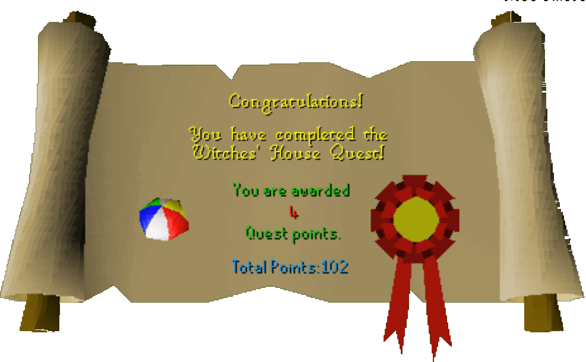

Witches House
Description: A young boy who lives in Taverley has kicked his ball into the garden of a scary old lady. He asks you to get it back for him. This proves more difficult than it first sounds.Difficulty: Intermediate
Length: Medium
Items & Skills Needed:
Reward: 4 Quest points, 6,325 Hitpoints XP
Instructions:
After talking to the boy, go to the main door and search for a key under one of the pots next to the door.
Use the key to unlock the door and go in. Walk upstairs to the witch's bedroom and grab her diary. Read it.
Go back to the main floor and then go down to the basement. Go through the gate, open, and search the wall cupboard for a magnet.
Go back to the main floor and then go into the small room between the main one and the garden. Put on your leather gloves. Use the cheese with the mouse hole in the corner. Then quickly use your magnet with the mouse.
Now go into the yard. ALWAYS WATCH THE WITCH ON THE MAP. You must stay behind the hedges as she walks by. Make sure you stay near the center of the hedge.
Keep moving along the fence until you come to the shed door. Try opening it to find it is locked. Then keep going along the wall to the fountain. Remember to stay hidden when the witch approaches.
Check the fountain. It should say something like, 'It looks scenic.' Read the diary again to learn about the fountain. Then check the fountain again. If you do not get the key after this, try opening the door again, then reread the diary. It should definitely work after that.
Now creep back to the door and unlock the door to go in. Try to grab the ball, and the 'Witch's Experiment' will attack you.
If you leave the shed you will have to start the battle over. So make sure you bring food to eat during the fight, a good weapon, and decent armor.
1st form: Level 19 experiment
2nd form: Level 30 spider
3rd form: Level 42 bear
4th and final form: Level 53 wolf
1st form: Level 19 experiment
2nd form: Level 30 spider
3rd form: Level 42 bear
4th and final form: Level 53 wolf
After defeating the experiment (congratulations), grab the ball and open the door. For the last time, sneak toward the house, then exit and return the ball to the boy for your reward.
Congratulations, Quest Complete!

This quest guide was written by Gnat88. Thanks to Weezy, Deano, and Keystone for corrections.
This quest guide was entered into the database on Sat, Feb 28, 2004, at 04:32:32 PM by Monkeychris and CJH and was last updated on Sat, Oct 09, 2004, at 12:12:15 AM.